Stěrka na okně
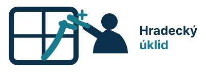
Okno dává scéně řád a jiskra ukazuje výsledek. Ze všech návrhů je nejblíž tomu, co máte na webu dnes.
Každý návrh je jiný směr, ne variace téhož. Všechny jsou připravené jako vektor, takže obstojí na webu, na vizitce, na razítku i na polepu auta.
Nejblíž stylu, který jste posílala. Značka ukazuje skutečnou práci a přitom zůstává čitelná i v malé velikosti.

Okno dává scéně řád a jiskra ukazuje výsledek. Ze všech návrhů je nejblíž tomu, co máte na webu dnes.
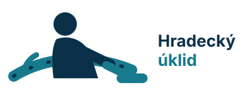
Silná diagonála a velký oblouk z něj dělají nejenergičtější znak celé sady.
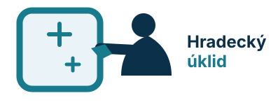
Víc prémiový a jemný směr: na první pohled čistý povrch, na druhý lidská práce.
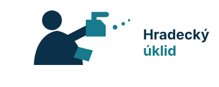
Nejosobnější varianta. Dvě ruce a drobný rozstřik ukazují péči bez zbytečné ilustrace.
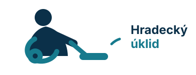
Čitelný na dálku, kompaktní a zároveň vhodný pro firmy i domácnosti.
Klidnější a nadčasovější poloha pro případ, že nechcete v logu postavu. Každý symbol říká něco jiného.
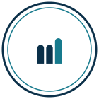
Funguje jako razítko, samolepka na dodávku i znak v profilu. Konzervativní, ale pořád vlastní.
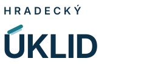
Česká diakritika se promění v nástroj. Drobnost, které si všimne ten, kdo se zastaví.
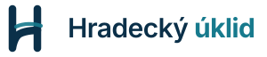
Hradec i úklid v jednom tahu. Výrazné, aniž by to potřebovalo dům nebo kapku.
Nejpřímější způsob, jak ukázat „před a po“. Jednoduché a velmi dobře škálovatelné.
Vypadá jako poslední tah stěrkou. Méně doslovné, ale s lidským charakterem.
Krátká ikona pro sociální sítě, aplikaci a razítko.
Písmena jsou skutečně vyříznutá z plochy. Drží proto i v jedné barvě.
Nenápadná vazba na Hradec. Nejlépe funguje jako avatar nebo favicon.
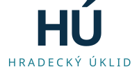
Přátelský a kompaktní podpis. Dobře sedí na malé lokální služby, ne na korporát.
Nejčitelnější monogram na první pohled. Působí mile, ale pořád uklizeně.
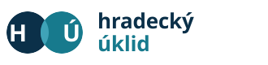
Nejbezpečnější vývoj současného loga, pokud nechcete měnit charakter značky úplně.
Bez ikony. Značka stojí na názvu samotném, ne na dalším oborovém symbolu.
Nejklidnější možnost. Výborná čitelnost na autě, dokumentech i ve webové hlavičce.
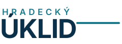
Silný blok pro samolepku, vizitku nebo čtvercové použití.
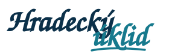
Nejvíc osobní alternativa. Funguje, pokud značka bude komunikovat teplo a péči.
Veselá varianta s nenápadnou stěrkou v diakritice. Dobré pro lehčí tón webu.
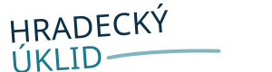
Nejvíc pohybu bez ilustrace. Hodí se, pokud chcete energii spíš než něžnost.